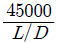

자기비파괴검사산업기사 (2015-03-08 기출문제)
1과목: 비파괴검사 개론
1. 결함부와 이에 적합한 비파괴검사법의 연결이 틀림 것은?
- 강제의 표면결함 - 자분탐상시험법
- 경금속의 표면결함 - 침투탐상시험법
- 용접내부의 기공 - 와전류탐상시험법
- 단조품의 내부결함 - 초음파탐상시험법
(정답률: 9%)

2. 침투탐상검사에 용제 세척방법으로 적절하지 않은 것은?
- 브러쉬로 고형물의 오염을 제거한다.
- 에어졸 타입 세정제의 노즐을 시험면에 가까이하여 강하게 뿌려준다.
- 수초간 방치한 후, 마른 걸레로 세정액을 닦아 낸다.
- 세정제를 시험면에 1회만 뿌려야 한다.
(정답률: 16%)
3. 거짓지시 (false call) 이란 무엇인가?
- 허용 가능한 크기보다 큰 흠
- 허용 가능한 크기보다 작은 흠
- 결함이 없는 부위를 검사 하였을 때 결함이 있는 것으로 지시하는 것
- 결함이 있는 부위를 검사 하였을 때 결함이 없는 것으로 지시하는 것
(정답률: 16%)
4. 다음 중 비파괴검사에 대한 설명으로 옳은 것은?
- 육안검사 (VT) 는 비파괴검사의 한 종류이다.
- 누설자속시험은 압력용기의 물의 높이를 검지하는데 적합한 시험방법이다.
- 자분탐상시험은 섬유강화 복합재료의 접촉 불량부를 검출하는데 적합하다.
- 침투탐상시험은 오스테나이트계 스테인리스강의 비드중에 내재하고 있는 미세한 균열을 검출하는데 적합한 시험방법이다.
(정답률: 15%)
5. 요크 (Yoke)를 이용한 자분탐상시험시 유도자장의 강도가 가장 큰 부위는?
- 요크의 북극(N)극
- 요크의 남극(S)극
- 극과 극 사이
- 극의 외부 주변
(정답률: 14%)
6. 50~90 Ni, 11~30 Cr 0~25 Fe 범위의 조성으로 된 합금으로 전기저항열선으로 가장 많이 사용되는 내열합금은?
- 니크롬(Nichrome)
- 알블락(Albrac)
- 라우탈(lautal)
- 실루민(silumin)
(정답률: 13%)
7. 18-8 스테인리스강에 대한 설명 중 옳은 것은?
- Ni 18%, Cr 8%를 함유한다
- 페라이트 조직으로 강자성이다.
- 입계부식 방지를 위해 Ti을 첨가한다.
- 염산, 염소가스, 황산 등에 강하다.
(정답률: 5%)
8. 복합재료 소재 중 섬유 강화 금속은?
- GFRP
- CFRP
- FRM
- ACM
(정답률: 12%)
9. 레데뷰라이트(Ledeburite) 조직을 나타낸 것은?
- 마텐자이트(martensite)
- 시멘타이트(cementite)
- α(ferrite) + (Fe3C)
- γ(ausetenite) + (Fe3C)
(정답률: 11%)
10. 내부응력을 받는 구조물 또는 제품에 어떠한 외력을 가하지 않은 방치상태에서도 자연적으로 재료가 파괴되는 현상은?
- 헤어크랙
- 시즌크랙
- 상온취성
- 고온취성
(정답률: 10%)
11. 해드필드강(hadfield steel)의 특징을 설명한 것 중 틀린 것은?
- 고 마그네슘 강이라고 불리운다.
- 내마멸성 및 내충격성이 우수하다.
- 상온에서 오스테나이트 조직을 갖는다.
- 단조나 압연보다는 주조하여 만들어진다.
(정답률: 9%)
12. 구리 및 구리 합금에 대한 설명으로 옳은 것은?
- 구리의 비중은 약 7.8 이다.
- 관 등의 황동제품은 잔류응력에 기인하여 탈아연부직이 발생한다.
- 황동가공재는 사용 중 시간의 경과에 따라 경도 등 제성질이 악화되는 현상을 경년변화라 한다.
- Cu80% + Zn20% 합금을 길딩 메탈이라 하며, coining을 하기 쉬우므로 동전, 메달 등에 사용된다.
(정답률: 7%)
13. 탄소강에서 탄소량 증가에 따라 증가하는 것은?
- 비중
- 강도
- 열전도도
- 열팽창계수
(정답률: 12%)
14. 금속을 물리적 성질과 기계적 성질로 구분할 때 물리적 성질에 해당되지 않는 것은?
- 비중
- 융점
- 열팽창계수
- 크리프저항
(정답률: 12%)
15. 스프링용 강에 요구되는 특성은 높은 탄성, 높은 내피로성, 그리고 적당한 점성이다. 이에 가장 적합한 조직은?
- 마텐자이트(martensite)
- 투르스타이트(troostite)
- 소르바이트(sorbite)
- 베이나이트(bainite)
(정답률: 9%)
16. 아크 용접기의 특성 중 부하 전류가 증가하면 단자 전압이 저하하는 것을 무엇이라 하는가?
- 정전류 특성
- 수하 특성
- 상승 특성
- 자기 제어 특성
(정답률: 6%)
17. 용접봉의 종류 중 내균열성이 가장 좋은 것은?
- 저수소계
- 고산화티탄계
- 고셀룰로스계
- 일미나이트계
(정답률: 6%)
18. 가변압식(B) 토치의 팁 1000번으로 가스용접시 가장 적당한 판두께[mm]는?
- 5
- 10
- 15
- 20
(정답률: 11%)
19. 용접 후 피닝을 하는 주목적은 무엇인가?
- 도료를 없애기 위해서
- 용접 후 잔류 응력을 제거하기 위해서
- 응력을 강하게 하고 변형을 적게 하기 위해서
- 모재의 균열을 검사하기 위해서
(정답률: 9%)
20. 피복 아크 용접에서 아크전압이 20V, 아크전류는 150A, 용접속도를 200cm/min라 할 때 용접 입열량은 몇J/cm 인가?
- 900
- 1200
- 1500
- 2000
(정답률: 10%)
2과목: 자기탐상검사 원리 및 규격
21. 자속밀도와 자계와의 관계가 옳은 것은? (단, B: 자속밀도, H: 자계의 세기, μ: 투자율, σ: 전도율 )
- B = μ + H
- B = μ × H
- B = σ × H
- B = ( σ × μ )/H
(정답률: 99%)
22. 자화시 결함부에 발생되는 누설자속에 대한 설명 중 틀린것은?
- 자계의 세기와 자화의 방향에 따라 다르다.
- 결함의 크기, 종류에 따라 다르다.
- 자계의 왜곡(찌그러짐)과 시험체의 형상에 따라 다르다.
- 자분의 농도와 투자성에 따라 다르다.
(정답률: 55%)
23. 자외선조사등(black light)의 관리에 대한 설명으로 틀린 것은?
- 자외선 강도계로 적정 강도 유지 여부 측정
- 연속검사시 과열방지를 위해 한 시간마다 소등할 것
- 자외선강도의 저하는 청소 불량이 많으므로 필터와 수은등을 청결히 할 것
- 시험면에서 자외선 강도가 800μW/cm2이상일 것
(정답률: 100%)
24. 자화전류에 대한 설명이 옳은 것은?
- 교류전류를 사용하는 경우는 원칙적으로 표면결함의 검출에 한한다.
- 직류전류를 사용하는 경우는 원칙적으로 표면결함의 검출에 한한다.
- 교류전류를 사용하는 경우는 원칙적으로 내부결함을 검출하기 위하여 사용한다.
- 교류전류를 사용하는 경우는 원칙적으로 외부, 내부결함을 모두 검출할 수 있다.
(정답률: 99%)
25. 환봉(round bar)의 양 끝단을 전극에 접촉시키고 전류를 통전하였을 때 원형자계는 어느 방향으로 발생하는가?
- 오른손 법칙에 따라 환봉 둘레 방향으로
- 오른손 법칙에 따라 길이 방향으로
- 왼손 법칙에 따라 길이 방향으로
- 왼손 법칙에 따라 환봉 둘레 방향으로
(정답률: 96%)
26. "

= Ampere-turns”의 공식은 무슨 자화법에서 사용되는가?- 원형자화
- 선형자화
- 평행자화
- 벡터자화
(정답률: 13%)
27. 전류관통법과 코일법의 공통점은?
- 자계의 방향
- 전극의 비접촉
- 스파크 발생
- 자화전류 설정방법
(정답률: 98%)
28. 자분탐상시험에서 잔류법에 대한 설명 중 틀린 것은?
- 강자성체에 적용한다.
- 자분적용 후 자화시킨다.
- 반파직류를 사용한다.
- 보자력이 큰 제품에 적용한다.
(정답률: 98%)
29. 축통전법에서 자화전류를 결정할 때에 고려하여야 하는 것은?
- 시험체의 길이
- 시험체 직경
- 시험체의 길이/직경
- 자분의 종류
(정답률: 8%)
30. 자분탐상시험에서 검사액의 분산매가 자녀야 할 성질로 틀린 것은?
- 점도가 낮을 것
- 시험체에 해가 없을 것
- 휘발성이 적을 것
- 인화점이 낮을 것
(정답률: 99%)
31. 보일러 및 압력용기에 대한 표준자분탐상검사 (ASME Sec.V, Art.25 SE-709)에서 극간 거리가 100 ~ 150mm 이고 자화전류로 직류를 사용하는 경우 요구되는 인상력은?
- 45N 이상
- 90N 이상
- 135N 이상
- 225N 이상
(정답률: 5%)
32. 철강 재료의 자분탐상 시험방법 및 자분모양의 분류(KS D0213)에 따른 자분탐상시험에서 시험체의 자기회로가 시험체 내에서 폐회로(원형자장)가 되어 반자장이 생기지 않도록 효과적으로 검사할 수 있는 자화 방법은?
- 프로드법
- 자속관통법
- 축통전법
- 요크법
(정답률: 4%)
33. 보일러 및 압력용기에 대한 표준자분탐상검사 (ASME Sec.V, Art.25 SE-709)에 의거 자분탐상검사를 실시할 경우 검사 가능한 최대 피복 두께는? (단, 피복재질은 부도체이다.)
- 0.01mm
- 0.03mm
- 0.⑤mm
- 0.07mm
(정답률: 76%)
34. 철강 재료의 자분탐상 시험방법 및 자분모양의 분류(KS D0213)에서 규정된 A형 표준시험편의 사용방법으로 옳은 것은?
- 표준시험편과 검사면의 접촉상태는 매우 중요하며 약 1mm 이상의 간격이 필요하다.
- 표준시험편의 인공 홈이 있는 면 반대편을 시험면에서 접촉시켜야 한다.
- 점착성 테이프로 접촉시킬 경우는 테이프가 인공 홈 부위를 완전히 덮도록 해야 한다.
- A형 표준시험편은 연속법으로 사용한다.
(정답률: 98%)
35. 철강 재료의 자분탐상 시험방법 및 자분모양의 분류(KS D0213)에서 시험기록의 기호가 p-1500Ⓓ 일 때의 의미로서 옳은 것은?
- 프로드법을 사용하여 교류 1500AT의 자계를 흐르게 하였다.
- 프로드법을 사용하여 맥류 1500A의 전류를 흐르게 하였다.
- 프로드법을 사용하여 교류 1500AT의 자계를 흐르게 하였다. 또 탈자를 하였다.
- 프로드법을 사용하여 직류 15000A의 전류를 흐르게 하였다. 또 탈자를 하였다.
(정답률: 96%)
36. 철강 재료의 자분탐상 시험방법 및 자분모양의 분류(KS D0213)에서 A형 표준시험편 중 직선형으로 인공 홈의 깊이가 30μm이고, 판의 두께가 100μm라 할 때 표시 방법으로 옳은 것은?
- 100-30
- 30-100
- 100/30
- 30/100
(정답률: 99%)
37. 보일러 및 압력용기에 대한 자분탐상검사의 합격기준(ASME Sec.Vll Div.1 App,6)에 따른 결함의 평가에 관한 설명으로 틀린 것은?
- 크기가 1mm인 원형지시는 평가하지 않는다.
- 길이가 가.4mm 이고 폭이 0.6mm 인 지시는 원형지시로 합부 평가를 해야 한다.
- 길이가 2mm 이고 폭이 0.5mm인 지시는 선형지시로 합부평가를 해야 한다.
- 길이가 2mm 이고 폭이 0.5mm 인 지시는 불합격으로 평가해야 한다.
(정답률: 93%)
38. 철강 재료의 자분탐상 시험방법 및 자분모양의 분류(KS D0213)에 의한 재질경계지시에 해당하지 않는 것은?
- 용접부의 용접금속과 모재의 경계
- 냉간가공의 표면가공도가 다른 부분
- 열처리의 경계
- 고밀도의 누설 자속이 생기는 부분
(정답률: 60%)
39. 철강 재료의 자분탐상 시험방법 및 자분모양의 분류(KS D 0213)의 A형 표준시험편에서 A1이 A2보다 낮은 유효자계에서 자분 모양이 나타나는 이유는?
- 가공하기 어렵기 때문
- 자기특성이 압연 방향과 그에 직각 방향에서 다르기 때운
- 어닐링처리를 하면 잔류응력이 제거되기 때문
- 어닐링처리를 하면 이방성이 매우 작아지기 때문
(정답률: 6%)
40. 보일러 및 압력용기에 대한 자분탐상검사(ASME Sec.V, Art.7)에서 프로드법으로 시험체를 검사할 때, 시험편 두께가 3/4인치 미만일 경우 자화 전류는 인치당 몇 암페어 이어야 하는가?
- 70 ~ 90 A
- 90 ~ 110 A
- 110 ~ 125 A
- 150 ~ 170 A
(정답률: 94%)
3과목: 자기탐상검사
41. 자분탐상검사에서 물에 분산시켜 검사액을 만드는 경우 일반적으로 첨가하는 물질이 아닌 것은?
- 녹방지제
- 오염방지제
- 계면활성제
- 거품방지제
(정답률: 76%)
42. 자분탐상검사에서 탈자가 필요한 경우는?
- 처음보다 낮은 전류로 다시 자화를 해야 할 때
- 자기변태점 이상에서 열처리 할 때
- 보자성이 낮은 연철 및 주철 재료인 경우
- 잔류자기가 크게 문제되지 않는 대형 주조품
(정답률: 98%)
43. 자분탐상검사의 자분적용 시 자화시기에 따른 분류로 옳은 것은?
- 직류법, 맥류법
- 건식법, 습식법
- 관통법, 극간법
- 연속법, 잔류법
(정답률: 100%)
44. 철강회사의 생산라인에서 압연품의 적층(Lamination)이나 압출품의 파이프와 같은 결함의 검출을 위한 자분탐상검사 방법에 대한 설명으로 옳은 것은?
- 프로드법으로 전면을 나누어 검사한다.
- 프로드나 극간법으로 두께방향의 단면을 검사한다.
- 축통전법으로 전면을 동시에 검사한다.
- 전류관통법이나 축통전법으로 동시에 검사한다.
(정답률: 8%)
45. 별도의 지시가 없을 때 최종적인 자분탐상검사의 시기로 가장 옳은 것은?
- 최종 열처리 실시 전 아무 때나
- 최종 가공 및 열처리가 완료된 후
- 최종 가공이 완료된 후, 최종 열처리가 실시되기 전
- 최종 가공이 완료되기 전, 최종 열처리가 실시된 후
(정답률: 46%)
46. 자분탐상시험 중 코일법에 대한 설명으로 틀린 것은?
- 시험체를 부분적으로 시험할 수 있다.
- 시험체에 직접 전류를 흘리는 방식이다.
- 미리 설치한 코일에 시험체를 넣어 시험한다.
- 코일 축에 대해 직각인 방향의 결함이 가장 잘 검출 된다.
(정답률: 99%)
47. 형광자분모양의 사진촬영 방법에 대한 설명으로 옳은 것은?
- 일반 플레쉬를 사용하여 카메라로 촬영한다.
- 자외선 등 아래에서 1/60초 또는 B셔터를 사용하여 촬영한다.
- 일반 카메라 렌즈에 자외선 필터를 끼워 촬영한다.
- 자외선등의 밝기보다 10배 정도 밝게 하여 촬영한다.
(정답률: 10%)
48. 자분탐상검사에서 입자 크기가 작은 자분을 사용하는 경우에 나타나는 영향으로 틀린 것은?
- 폭이 좁은 결함 검출에 좋다.
- 미세한 결함을 검출하기에 유리하다.
- 시험면이 거친 경우 검출 감도가 낮다.
- 시험면이 젖어 있어도 검사감도에는 전혀 영향이 없다.
(정답률: 96%)
49. 강자성체를 자기변태 온도이상으로 가열 했을 때 어떤 결과가 예산되는가?
- 강자성체로 유지된다.
- 반자성체로 변한다.
- 상자성체로 변한다.
- 자성에는 무관하고 방사성 물질로 변한다.
(정답률: 95%)
50. 대형 주강품을 자화시켜 검사할 때 가장 적합한 자화 방법 및 자분적용 방법은?
- 극간법 및 습식자분
- 축통전법 및 건식자분
- 프로드법 및 건식자분
- 전류관통법 및 습식자분
(정답률: 8%)
51. 전류관통법에 의한 자화의 특징으로 틀린 것은?
- 전류관통법에 따른 가능한 자기회로는 폐회로이므로 반자장이 없다.
- 시험체의 크기 및 자기특성에 따라 자화전류를 흘리도록 하여 적정한 자계의 강도에 의해 자화할 수 있다.
- 자계의 강도는 전류관통봉의 중심으로부터 거리에 반비례하지만 거리가 같으면 동일한 감도로 탐상할 수 있다.
- 탈자할 때 시험체에 교류 전류값을 적용한 경우, 직류 전류값으로 서서히 낮춰 0 에 가깝게 해야 한다.
(정답률: 94%)
52. 빌릿(billet)의 누설자속탐상검사 시 적합한 주사 방식은?
- 탐상 헤드를 정지시키고, 시험체를 회전시킨다.
- 탐상 헤드를 직진시키고, 시험체를 회전시킨다.
- 탐상 헤드를 회전시키고, 시험체를 직진시킨다.
- 탐상 헤드를 정지시기고, 시험체를 직진시킨다.
(정답률: 95%)
53. 자분탐상시험의 일반적인 특성으로 옳은 것은?
- 시험품은 강자성체일 것
- 내부 깊숙한 결함검출이 가능할 것
- 비철금속 대부분이 검사 가능할 것
- 자속은 가능한 한 결함면과 수평일 것
(정답률: 98%)
54. 자분탐상검사에 대한 설명으로 옳은 것은?
- 복잡한 형상의 시험체는 건식법을 적용하는 것이 좋다.
- 탐상면에 검사액을 살포할 때는 가능한 한 두껍게 하는 것이 좋다.
- 잔류법일 때는 자분적용 종료 이전에 탐상면에 강자성체를 접촉시켜서는 안된다.
- 잔류법은 자화된 후 자분을 적용하기 때문에 결함 검출 능력이 연속법보다 우수하다.
(정답률: 97%)
55. 자분탐상검사를 심시할 수 있는 재료는?
- 금
- 구리
- 아연
- 코발트
(정답률: 96%)
56. 일반적으로 코일법으로 1회에 시험할 수 있는 시험체의 한계 길이는?
- 18인치
- 25인치
- 30인치
- 36인치
(정답률: 10%)
57. 거치식 자분탐상검사 장비에 관한 설명으로 틀린 것은?
- 선형 및 원형자화를 모두 적용할 수 있다.
- 건식자분만 사용하도록 구성되어 있다.
- 소형 시험체 검사에 적합하도록 구성되어 있다.
- 자화전류를 조정할 수 있도록 구성되어 있다.
(정답률: 98%)
58. 기공, 단조 겹침, Seam 등과 같은 시험품의 구성 상태나 물리적 구조상의 방해로 생기는 누설자장에 의해 시험품의 표면 어떤 곳에 자분이 모였으나 사용상에 지장이 없다고 한다. 이 지시는?
- 불연속지시
- 결함지시
- 관련지시
- 의사지시
(정답률: 6%)
59. 자분탐상시험 결과에서 연속된 선으로 나타나지 않는 지시는?
- 균열
- 단조겹침
- 라미네이션
- 다공성
(정답률: 98%)
60. 판정대상이 아닌 지시모양으로서 자화조작의 부주의로 인해 발생하는 지시가 아닌 것은?
- 자극지시
- 단류선지시
- 전류지시
- 자기펜자국
(정답률: 93%)